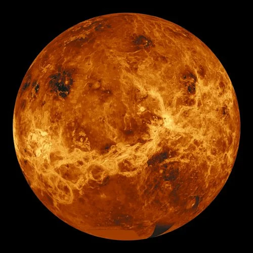

Mercury
Mercury is the closest planet to the sun. It has a rocky surface, covered in craters.
Find moreVenus
Venus is Earth's "sister planet" and is the hottest planet in the solar system.
 Find moreEarth
Earth is the only planet known to support life, with a variety of ecosystems.
 Find more
Find more
Mars
Mars, the "Red Planet," has a thin atmosphere and a reddish surface from iron oxide.
 Find more
Find more
Jupiter
Jupiter is the largest planet, known for its Great Red Spot, a giant storm.
 Find more
Find more
Saturn
Saturn is famous for its rings, made of ice and rock particles.
 Find more
Find more
Uranus
Uranus is an ice giant with faint rings and very cold temperatures.
 Find more
Find more
Neptune
Neptune is the farthest planet from the sun, known for its deep blue color.
 Find more
Find more